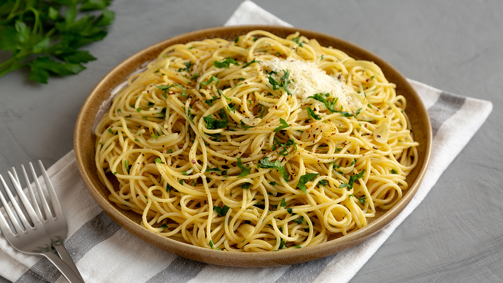
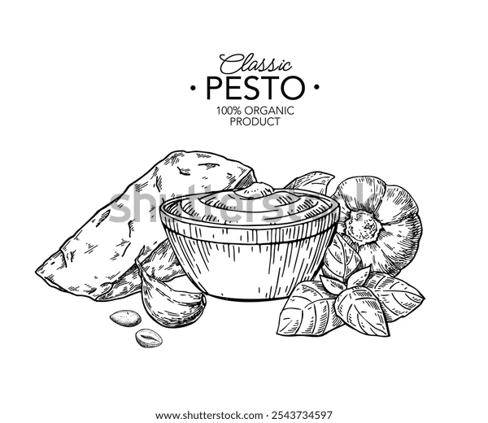

Receita de macarrão alho e oleo
Igredientes:
- 6 colheres de sopa de óleo de soja ou azeite
- 3 dentes de alho amassados
- 1 colher de sopa de manteiga sem sal
- 500g de macarrão tipo espaguete cozido
- 6 colheres de sopa de cebolinha picada
Utensílios necessários
- Panela
-
 Colher
Colher - Forno
Modo de preparo
- Em uma penela, aqueça o óleo de soja ou azeite em fogo baixo.
Adicione os dentes de alho amassados e refogue por cerca de 2 a 3 minutos,
mexendo constatemente, até que o alho começa a dourar e liberar aroma. - Adicione manteiga sem sal à panela e deixe derreter por completo,
mexendo para que a manteiga se incorpore ao alho. - Em seguida, acrescente o espaguete já cozido a panela. misture bem
até que o macarrão fique completamente envolvido com o alho
e a manteiga. Continue mexendo delicadamente para que o molho
se adira aos fios do espaguete. - Desligue o fogo e finaleze o prato com a cebolinha picada,
espalhando - a por cima do macarrão. - Sirva imediatamente, aproveitando a combinação de sabores
frescos e o teque aromático da cebolinha.
MACARRÃO AO ALHO E ÓLEO COMBINA COM O QUÊ?
O macarrão alho e óleo é super versátil e combina com praticamente tudo! Fica ótimo com uma salada verde,
peixe grelhado ou até mesmo com frango. Se quiser uma refeição mais completa,
pode adicionar um pouco de queijo parmesão ralado por cima e um toque de pimenta calabresa
para dar aquele sabor a mais.
Dicas
O segredo está no alho! Deixe o alho dourar, mas sem queimar, para não amargar.
Para deixar o prato mais saboroso, adicione manjericão ou salsinha picada na hora de servir.
Use macarrão de boa qualidade para garantir uma refeição ainda mais gostosa.